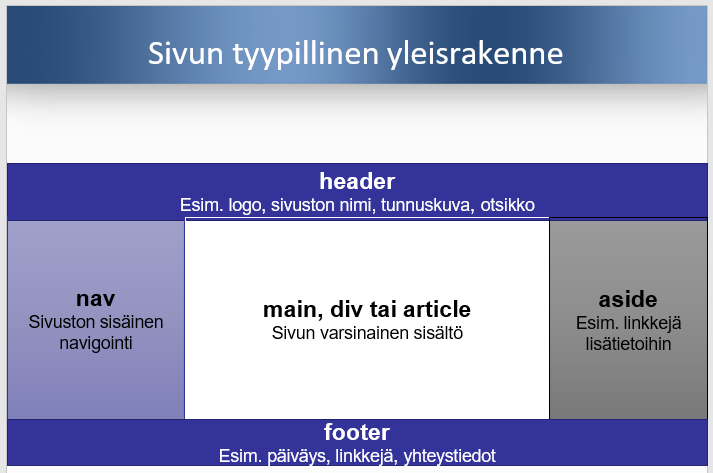

HTML5 Perusteita
HTML5 materiaalin löydät täältä:
Materiaaleja CSS3:n opiskeluun
Materiaaleja JavaScriptin opiskeluun
Mitä HTML5 on?
- Sovellusliittymä eli API (application program interface) on määrittely sille, millaisen rajapinnan kautta selain voidaan ohjelmoida suorittamaan haluttuja tehtäviä.
- Yksi ohjelmointirajapinnan päätarkoituksista on tarjota käyttömahdollisuus yleisimmille toiminnoille. Käyttöliittymä voi esimerkiksi tarjota ohjelmointirajapinnan ikkunoiden tai kuvakkeiden piirtoon, ja tietokanta taas rajapinnan kyselyiden läpiviemiseksi. Lähde Wikipedia
- HTML5:n avulla voidaan luoda vuorovaikutteisia sovellusmaisia verkkosivuja.
- Kun sivu ei toimi, katsotaan HTML:n ja dokumenttioliomallin eli DOMin tasolla. Selaimessa näppäimellä F12
HTML5 on tärkeä, koska...
- Se on HTML:n tosiasiallinen standardi
- Se kuvaa HTML-kielen sellaisena, kuin selaimet sitä käsittelevät
- Se esittää tarkan käsitemallin ja teknisen määrittelyn sille, miten sivuun liitetään toiminallisuutta scripteillä
- Se sisältää laajennuksia HTML:n aiempiin versioihin nähden.
Taustaa
- HTML on ollut web-sivujen merkkauskielenä alusta alkaen,
- Aluksi se suunniteltiin pääasiassa tieteellisten dokumenttien esittämiseen
- HTML:n käyttö on laajentunut räjähdysmäisesti. Nykyään esim. sähköpostissa, varsinkin markkinoinnissa ja uutiskirjeissä käytetään yleisesti HTML-muotoa. HTML:ää voidaan käyttää myös dokumenttimuotona, josta voidaan tuottaa esim. epub-muotoinen e-kirja tai pdf- muotoinen paino-originaali sopivalla muunto-ohjelmalla.
Tagit ja elementit
- Elementti koostuu alkutagista, sisällöstä ja lopputagista.
- Alkutagi on merkkien < ja > välissä ja lopputagi on samaa muotoa, nimen edessä on vinoviiva / esim.
<h2><em>diiba daaba </em></h2> - Lopputagi on samaa muotoa, nimen edessä on vinoviiva / esim.
- Elementit vastaavat sivun isompiaa ja pienempiä rakenneosia.
- Esim. p-elementti on kappale h1-elementti on tason 1 otsikko em-elementti on korostettua tekstiä
Määrite eli attribuutti
koodi: asettaa input elementin id määritteen arvoksi merkkijonon ”lkm” ja type määritteen arvoksi merkkijonon ”number”.
<input id=lkm type=number>
HTML5:n vaatimuksenmukaiset elementit, niiden muoto ja merkitys
Johdatus elementteihin
<!--dokumenttityyppi on html-->
<!doctype html>
<!-- meta charset ilmoittaa merkistökoodauksen -->
<meta charset="utf-8">
<!--sivun ulkoinen otsikko, joka näkyy välilehden nimenä selaimessa -->
<title>Demo<title>
<!--Otsikko 1-->
<h1> Yksinkertainen html5 sivu <h1>
<!--kappale vaihtuu ,<em> korostettu teksti -->
<p> Hei <em> kaunis </em> maailma!
<!--Kommentti: Hei kaunis maailma! teksti html5 kielellä-->
<!doctype html>
Dokumenttityyppinä on html. Kirjoita <!doctype html> tagi jokaisen sivun ylimmäiseksi tiedoksi.Juurielementit
- Tarkoittaa merkkauskielen elementtiä, joka esittää koko dokumenttia.
- Se on dokumenttipuun lähtösolmu, jonka jälkeläisiä kaikki muut solmut ovat.
- HTML-sivulla juurielementti on aina html-elementti.
HTML-sivun html elementit
- Merkitys: koko sivun elementtinä
- Koko sivun kieli ilmoitetaan tarvittaessa lang- määritteellä ja tätä varten käytetään alkutagia sivun alussa.
- Esim: <html lang=fi><title>Hei</title>Hello!</html>
Sivun metatieto
Elementit, jotka esittävät koko sivua koskevia metatietoja eli tietoja tiedosta. Tarkoitettu osittain selainten ja osittain hakukoneiden käsiteltäviksi. Nämä elementit eivät tuota mitään näkyvää sisältöä sivulle. Ne voivat ohjata tapaa, jolla selain esittää sisällön.
Erityisiä metatietoelementtejä ovat:
- Title sisältää vapaamuotoisena tekstinä esitettyä tietoa
- Meta-elementit joissa voidaan luetella esim. avainsanoja tai määritellä dokumentin ominaisuuksia Käytetään vaikuttamaan hakukoneiden toimintaan; menestys vaihtelee.
Meta-elementti
- Merkitys: Sivua kokonaisuutena koskeva metatieto
- Esim <meta charset=utf-8 >
- Charset ilmoittaa merkistökoodauksen (character encoding)
- Meta-elementti koskee html- dokumenttia kokonaisuutena ja metatieto esitetään tekstinä.
Metaelementin lajeja
<meta name=...content=... >. Sisältää varsinaista sivukohtaista metatietoa Name-määrite ilmoittaa metatiedon nimen Content määrittää metatiedon arvon
Esimerkkejä meta-elementeistä

HEAD elementti
Esim: <meta charset=uft8><title>Ohjelmoijat</title></head>
Järjestä tiedot head elementin sisällä seuraavalla tavalla;
- <meta charset=uft-8>
- Title-elementti
- Base-elementti (harvoin)
- Muut meta-elementit
- Link-elementit
- Script-elementit
- Style-elementit
Title elementti
- Merkitys: Sivun ulkoinen otsikko, joka näkyy yleensä välilehden nimenä selaimessa. Esim. <title>Ohjelmoijat oy:n etusivu </title>
- Vain yksi title elementti sallitaan, vain tekstiä.
- Ei saa olla tyhjä. Tärkeä hakukoneiden kannalta.
- Ei tageja titlen sisällä.
- Title voi näkyä myös selaimen ikkunan otsikkona yläpalkissa, selaushistoriassa, kirjanmerkeissä, tulosteissa kunkin arkin tunnistetiedoissa.
- Title-elementin tulisi olla oikeinkirjoitettu, lyhyt, sen pitäisi kuvata konkreettisesti sivun senhetkistä sisältöä, ei koko sivuston, Voi olla esim. lyhyt iskulause.
Link elementti
Merkitys: Määrittelee sivun suhteen toiseen sivuun tai muuhun resurssiin.
- Esim. <link rel=stylesheet href=tyylit.css > rel=stylesheet, elementti merkitsee, että sivun esityksessä otetaan käyttöön tyyliohje. Muut rel-arvot saattavat luoda linkkejä. Link elementti määrittelee sivun suhteen (yhteyden) toiseen resurssiin. Resurssi voi olla mitä tahansa johon voi viitata URL:lilla, esim. html-tiedosto, tyyliohje, tekstitiedosto, kuva yms. Link elementti on sallittu vain head-elementin sisällä. Href on viitatun resurssin url-osoite (tässä tyylit.css)
Style elementti
Merkitys: Tyyliohjeen liittäminen html-sivuun. Yleensä on parempi käytää ulkoista tyyliohjetta, johon viitataan link-elementillä.Silloin eri sivuilla voidaan käyttää samaa tyyliohjetta.
Script elementti
Javascript on lähes ainoa selainohjelmoinnin kieli. Html sivuun voidaan liittää Javascript koodi parilla järkevällä tavalla (alla ja oikealla) Käytön alkuun pääsee kirjoittamalla suoraan html- dokumenttiin seuraavan koodin. <script> Alert('Hei Maailma!');</script>
Ulkoisessa html:stä erillisessä tiedostossa. Script elementillä: esim. <script src=perusskriptit.js></script> Tässä perusskriptit.js on javascript tiedoston nimi, joka liitetään sivuun.
Sivun jako-osat
Sivun jako-osia ovat mm.
- Body
- Article
- Section
- Nav
- Aside
- Otsikot h1-h6
- Header
- Footer
- Address
Sivun tyypillinen sivurakenne
Body, ei enää tarpeellinen
Merkitys: Sivun sisältö Esim. <body >Hei maailma!</body> Alku- ja lopputagi eivät ole tarpeen html5-kielessä. Niiden käyttö voi kuitenkin selkeyttää koodaamista.
Header
Merkitys: Sivun tai sen osan otsakeosa, ylätunniste
Yleensä header-elementti on sivun body-, article- tai section-elementin alussa.
Älä sekoita head-elementtiä header-elementtiin.
Head-elementti on html-dokumentin alussa joka sisältää mm. title-elementin. Sen sisältö ei ole näkyvää
Header-elementti on uusi elementti, jota voidaan käyttää sivun näkyvässä osassa ryhmittelyyn.

Nav, navigaatio
- Sivun osa, joka sisältää linkkejä muille sivuille tai sivun osiin.
- Sivuston navigointi tai sivun sisäinen navigointi
- Nav-elementti sopii sivuston vakionavigoinnin merkkaamiseen, tai sisällysluettelon merkkaamiseen.
- Nav-elementin sisälle kirjoitetaan linkit a- tai area elementillä
- Sivulla voi olla useita nav-elementtejä esim. vasemmalla ja ylhäällä.
- Nav elementit osoittavat osia, joihin käyttäjän pitäisi ensisijaisesti katsoa, kun hän haluaa liikkua sivuilla.
- Usein nav-elementin sisällä on ul-elementti. Siellä voi olla useita ul-elementtejä tai kuva, jonka osat toimivat linkkien tavoin.

Section, sivun jako-osa
Käyttö: Voidaan käyttää sisällön aiheenmukaiseen ryhmittelyyn, esim. kirjan luku tai käyttöliittymän välilehti. Section elementtejä voi olla sisäkkäin. Tarkoitettu korvamaan div- elementti, kun sitä on käytetty sivun jakamiseen osiin. Section elementti sopii silloin, kun osan tulisi näkyä sivun jäsennyksessä.
Section elementin alussa on yleensä otsikko. Jokainen section elementti luo oman otsikkoavaruutensa. Kirja voi jakautua lukuihin, jotka jakautuvat alalukuihin. Jako-osan merkkaaminen tärkeää, jos jako-osaa halutaan käsitellä yhtenä kokonaisuutena css:ssä tai JavaScriptissä.